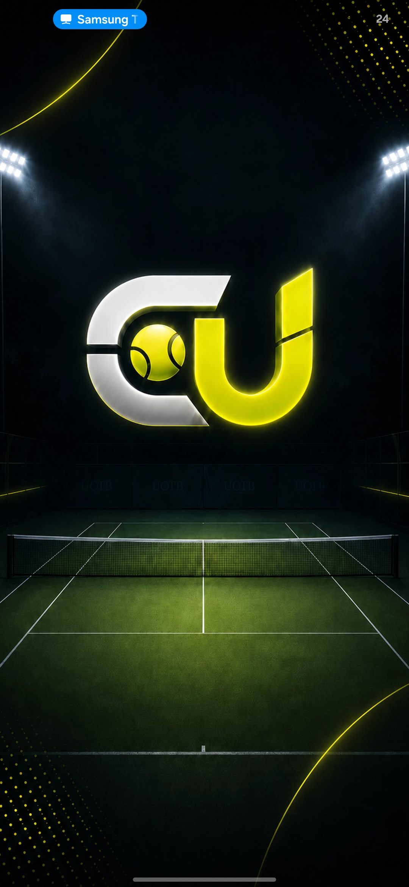
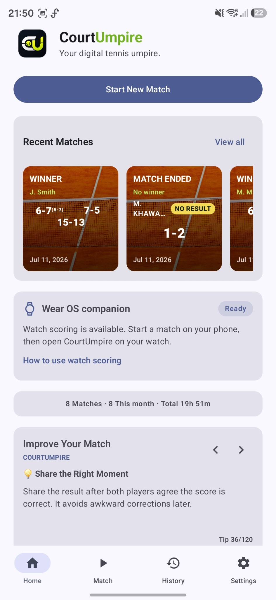
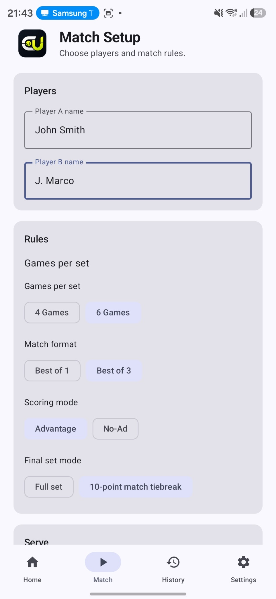
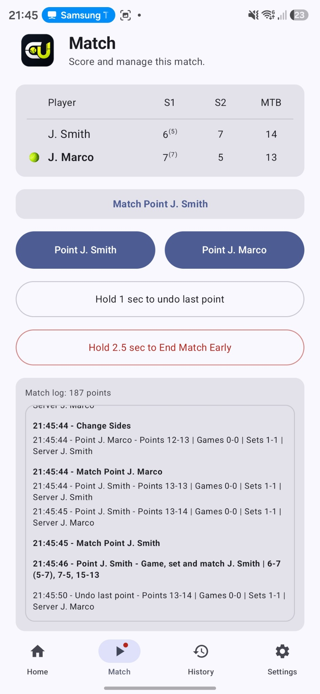
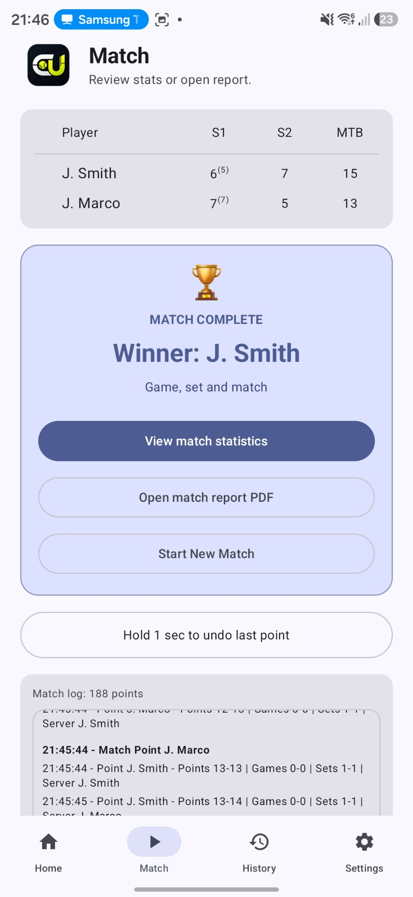
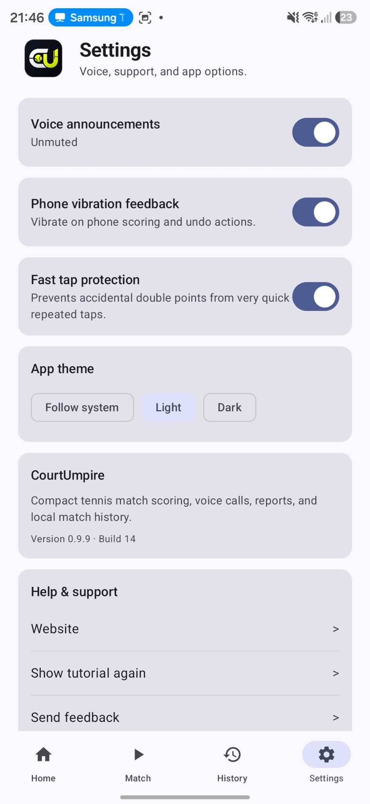
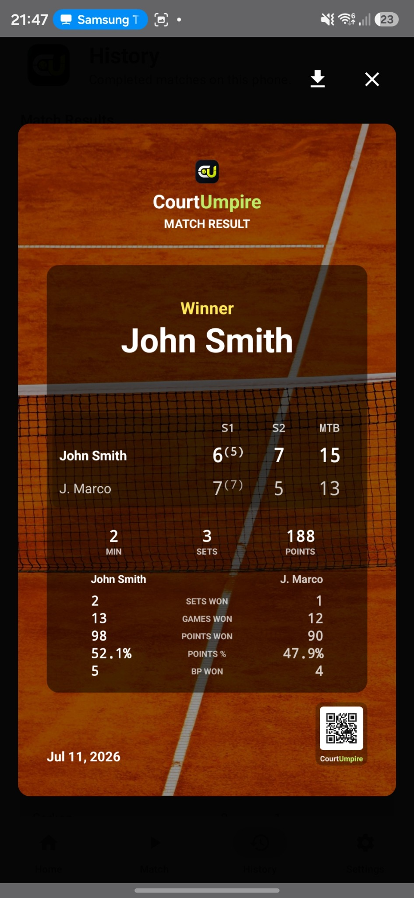
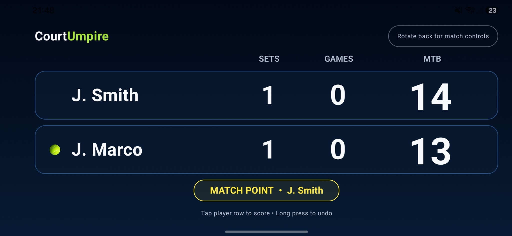
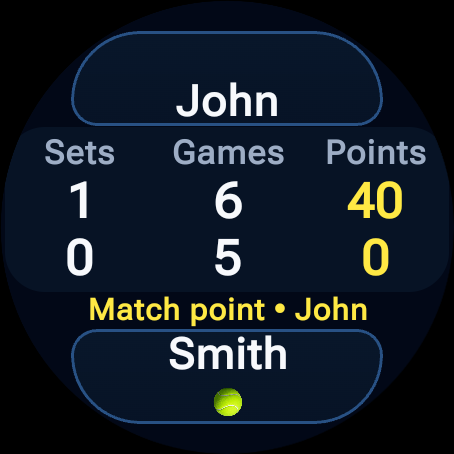

Flexible Match Rules
Choose 4-game or 6-game sets, best-of-1 or best-of-3, Advantage or No-Ad, and a full final set or 10-point match tiebreak.
Android + Wear OS
CourtUmpire is a simple tennis scoring app for amateur players, with voice umpire, match log, PDF report, and Wear OS control.
Interested in early beta builds? Join the CourtUmpire beta group.
No account required · No ads · Match data stays on your device

Built for the court
Focused tools for real tennis matches, without unnecessary setup or distractions.
Choose 4-game or 6-game sets, best-of-1 or best-of-3, Advantage or No-Ad, and a full final set or 10-point match tiebreak.
Track points, games, sets, server order and side changes, with undo and fast-tap protection for accidental repeated taps.
Hear score calls and receive change-ends, break-point, set-point and match-point announcements.
Review match statistics and history, create detailed PDF reports and share or download polished result images.
Score directly on Android, use the large landscape scoreboard or control the active match from a connected Wear OS watch.
No account and no advertising. Match records remain stored locally on your device.
The real app
Actual CourtUmpire screens from Android and Wear OS.








Who it is for
Available now
CourtUmpire is available for Android, with a connected Wear OS companion for scoring from your wrist.